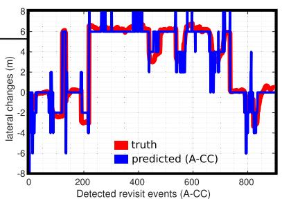
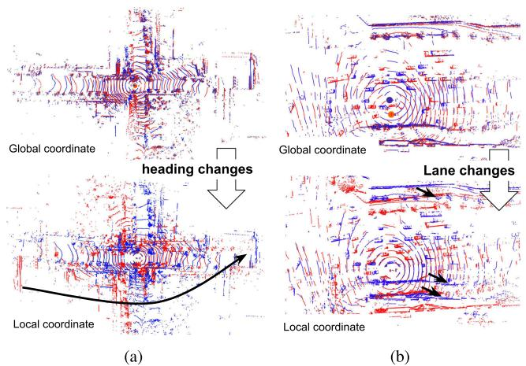
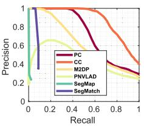

具体编码：以激光为中心，半径 0–80 m 切成 20 个环（每环 4 m），整圈 0–360° 切成 60 个扇区（每扇区 6°），得到 20×60 的矩阵。每个格子取落入点云的最大 z 高度 $\phi(P_{ij})=\max z(p)$（空格记 0）。这就是「天空线轮廓」。它不是特征，是直接可读的几何图，因此不需要任何训练。
这张图在画什么：左边是一条真实街道的俯视图（南北两侧的楼、行道树、公交站台、公交车与路边停的车都标了高度），传感器在中心，画了同心环（半径方向）和放射扇区（角度方向）。右边是把这张俯视图按「环×扇区」逐格编码成的 20×60 矩阵，每格颜色代表该格内点云的最大高度。 怎么看这张图：① 它不是特征直方图，而是一张「可读的几何图」——你能直接看出「哪一圈、哪一扇区有高楼」。② 因为保留了绝对位置，两个地点的图才能拿来「对齐比较」，这是它区别于老方法的关键。③ 编码只用最大高度，对点的密度、法线不敏感，所以单帧创建比 M2DP/Z-projection/ESF 还快。 要记住的一句话：Scan Context 把「一帧激光」变成「一张带坐标的天空线图」，且完全不训练。
原图注（Fig. 1）：Two-step scan context creation. Using the top view of a point cloud from a 3D scan (a), we partition ground areas into bins, which are split according to both azimuthal (from 0 to 2π within a LiDAR frame) and radial (from center to maximum sensing range) directions. We refer to the yellow area as a ring, the cyan area as a sector, and the black-filled area as a bin. Scan context is a matrix as in (b) that explicitly preserves the absolute geometrical structure of a point cloud. The ring and sector described in (a) are represented by the same-colored column and row, respectively, in (b). The representative value extracted from the points located in each bin is used as the corresponding pixel value of (b). In this paper, we use the maximum height of points in a bin. 怎么看这张图：(a) 是俯视分格（黄=环 ring、青=扇区 sector、黑=格子 bin），(b) 是编码出的矩阵——同色的行/列一一对应。这证实了上面自绘图：矩阵的行是环、列是扇区，像素值是该格最大高度。
3. 列循环移位：为什么它对旋转（yaw）不变
关键问题来了：同一地点、车头朝向不同（比如反向回访），天空线图会整体「左右转」一格。Scan Context 的解法是：把候选矩阵的列循环移位 n 格去和查询比，取最像的那个 n。这个 n 就是 yaw 粗对齐量，还能当 ICP 初值。相似度用列向余弦距离：每一列单独算余弦距离，再平均；最后在「所有循环移位」里取最小。
原图注（Fig. 3）：Example of scan contexts from the same place with time interval. The change of the sensor viewpoint at the revisit causes column shifts of the scan context as in (a). However, the two matrices contain similar shapes and show the same row order. 怎么看这张图：同一地点两次访问，因视角变化，矩阵的「列」整体平移了（(a) 的红蓝偏移示意）；但两矩阵形状相似、行序一致。这正是「列循环移位能对齐」的实证——也暗示了：只要变化是纯旋转（列移），就能对齐；若行序也乱了（横向平移），就不行。
分工非常清楚：KITTI 08 纯反向时 PC 远优于 CC（AUC PC 0.55 / CC 0.00——CC 在纯旋转下失效，符合设计）；Riverside 02 纯横向时 CC 大幅优于 PC。作者还提出 DR（distribution–recall）曲线，衡量回环的时空分布多样性——不只是「检得多」，还要「检得散」。
这张图在画什么：① 是一条三车道城市道路的俯视：查询帧里自车在车道 ①、库里那一帧在车道 ②，同一座楼在两帧里离车远近并不一样。② 展示极坐标 PC 的两张矩阵：同一个楼块从上面的行「掉」到了下面的行，行序被打乱。③ 展示笛卡尔 CC 的两张网格：同一个楼块只是整体右移了几列。 怎么看这张图：① 先看 ① 里的横向位移——车没换朝向、只是横着挪了一个车道。② 再看 ②：PC 的行代表「半径」，横向一动半径就变，所以「行」错了位；列循环移位只能挪列、挪不了行，于是救不了。③ 最后看 ③：CC 把点云摊在笛卡尔网格上、把对齐轴换成横向 y，换车道就只是网格整体错开几列——正好是列移能对齐的形态。这就是「PC 管旋转、CC 管横向」的直观来源。 要记住的一句话：PC 与 CC 不是「一好一坏」，而是两把量不同方向的不变尺子；2018 原版只有 PC，横向不变要等 2022++ 的 CC 才补上。

原图注（Fig. 17）：Semimetric localization at max F1 score on Pangyo sequence. (a) and (c) Relative 1-D pose estimation via aligning key matching of A-PC (for relative rotation) and A-CC (for relative translation). Relative rotation (A-PC) and lateral translation (A-CC) are depicted in blue, while the red line indicates the true relative displacement obtained from the ground truth. 怎么看这张图：上半 A-PC 给出相对旋转（蓝色曲线贴着红色真值），下半 A-CC 给出相对横向平移（平均误差 0.84 m）。这直观说明「PC 管旋转、CC 管横向」是两套并行的 1-DOF 半度量定位，而不是一套描述子同时搞定两者。

原图注（Fig. 1）：Sample point cloud undergoing rotational (e.g., reversed revisits) and translational (e.g., lateral lane changes) motion. The red indicates the query scans, and the blue depicts experience in the database. Unlike the view in global coordinates (i.e., world coordinate, top row), the measurement looks different in the local coordinates (i.e., sensor coordinate and bottom row). Also, note that many dynamic objects exist in both scans. 怎么看这张图：上排是世界坐标（红=查询、蓝=库里经验），下排是传感器局部坐标。反转回访（旋转）和换车道（横向）在局部坐标下长得完全不同——这正是 PC 与 CC 各自要对付的两种变化。图里还有不少动态物体，说明描述子对密度不敏感也有帮助。

原图注（Fig. 21）：Comparisons with deep learning based methods, SegMap, and PointNetVLAD. (a) KAIST 03 (b) Riverside 02 (c) KITTI 08. 怎么看这张图：把这套「免训练几何描述子」和点云深度学习方法（SegMap、PointNetVLAD）放在一起比 PR 曲线。它想说明：不训练、靠几何结构，照样能和学习式方法掰手腕——这是本课回应 0011 那句话最有力的证据：在激光回环这条线，深度学习「没那么容易吃掉」手工法。